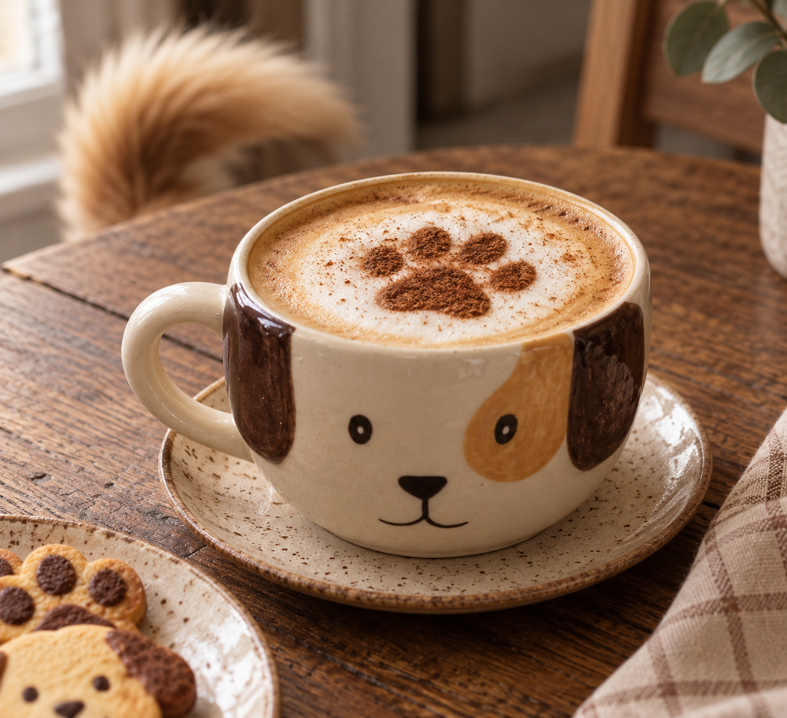
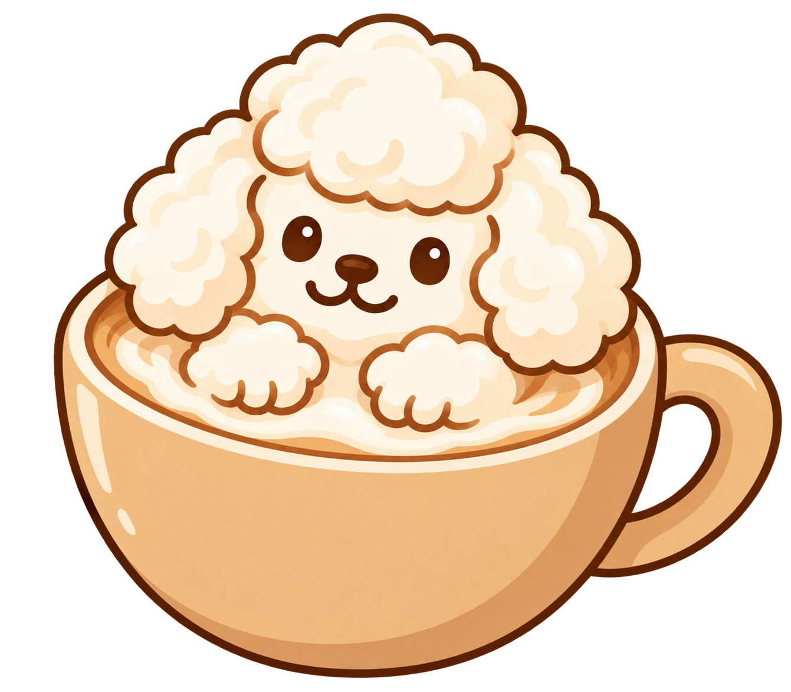
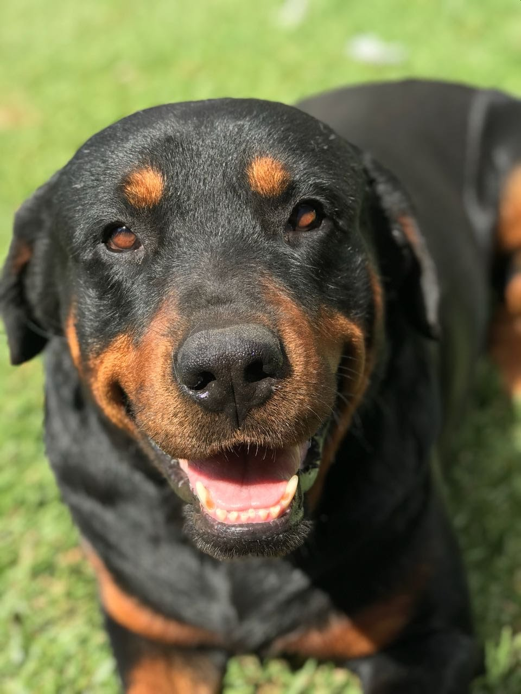
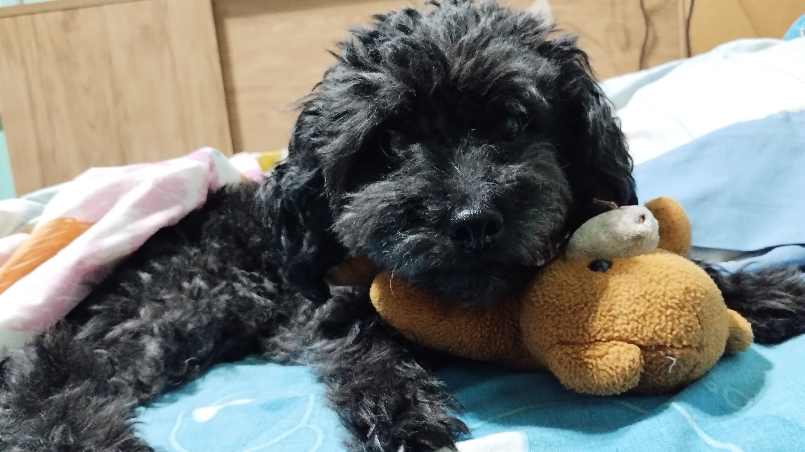
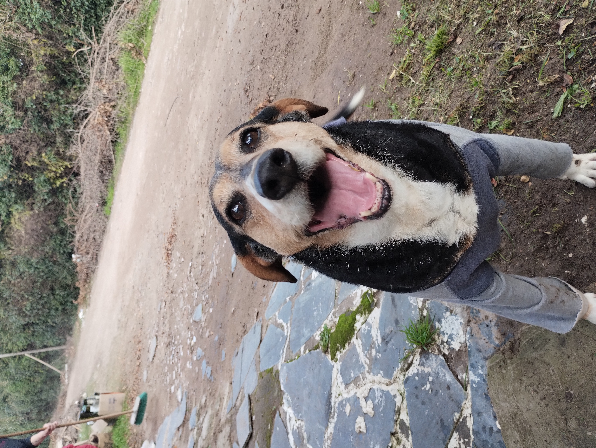
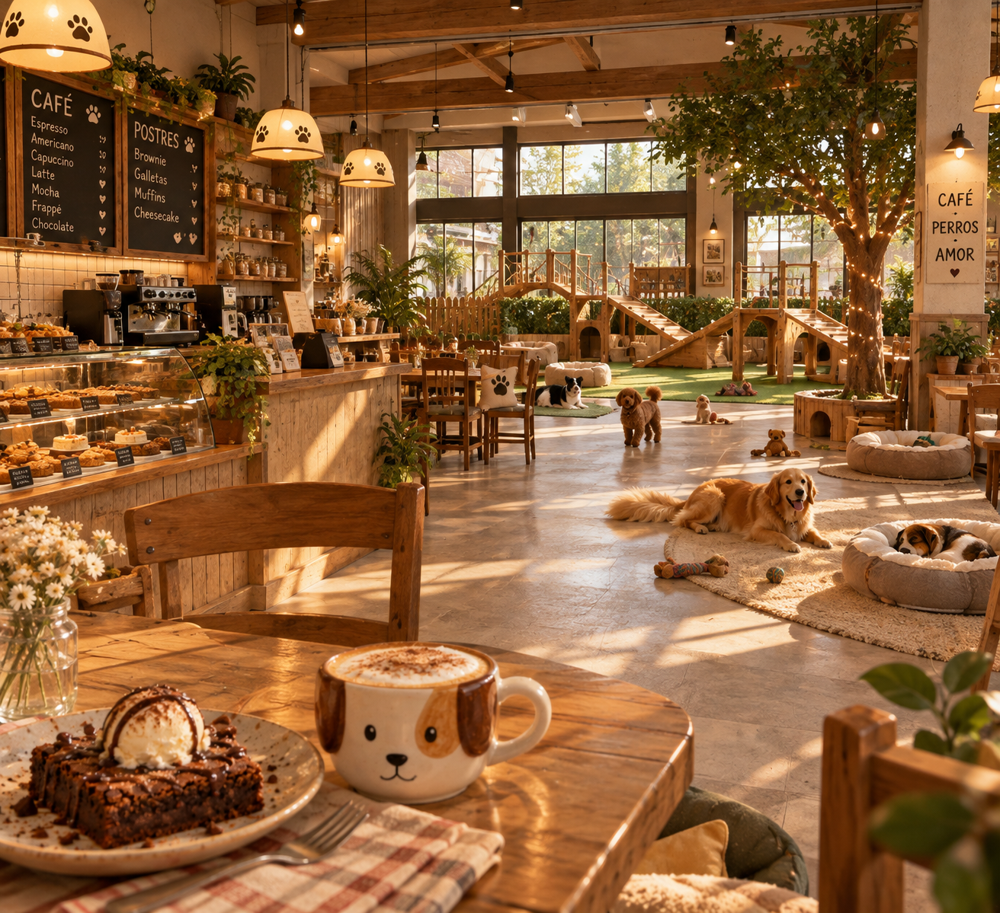
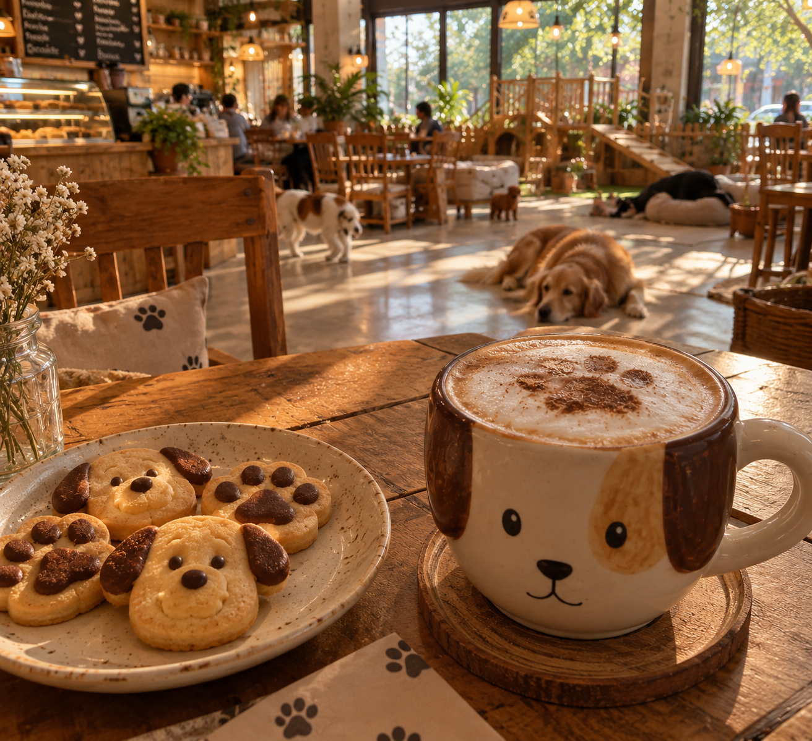
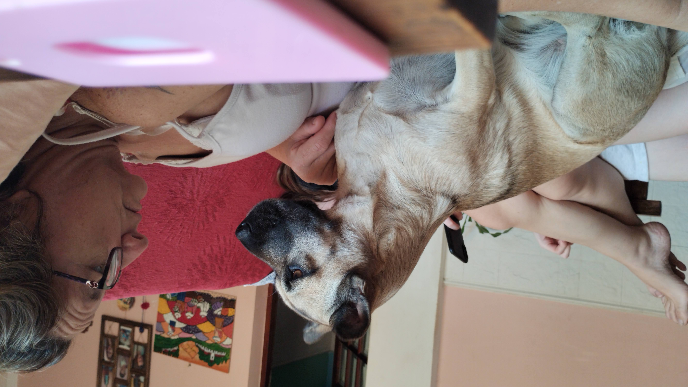

Puppaccino
Espresso, leche vaporizada y una suave capa de espuma.
Somos un refugio para los amantes del buen café y los animales. Cada taza que disfrutás nos ayuda a darles una segunda oportunidad.

Todos ellos están esperando encontrar una familia que les dé mucho amor.

Edad: 14 años
Un grandote tranquilo y cariñoso. Ama las caminatas y estar acompañado.

Edad: 8 años
Tranquila, mimosa y muy compañera. Le encanta dormir al sol y recibir caricias.

Edad: 8 años
Juguetón, curioso y lleno de energía. Es ideal para una familia activa.

Edad: 12 años
Dulce, divertida y súper sociable. Se lleva muy bien con otros perros.

Puppaccino nació con una idea sencilla: crear un espacio donde disfrutar de un buen café también pueda cambiar una vida.
Trabajamos junto a refugios y voluntarios para brindarles cuidado a perros rescatados mientras esperan encontrar una familia.
Parte de lo recaudado en nuestra cafetería y tienda se destina a alimento, atención veterinaria y cuidados para nuestros huéspedes.
Algunos momentos compartidos por quienes visitaron nuestro café y encontraron un nuevo amigo.

"El café es delicioso y el ambiente es muy acogedor. Además, saber que estoy ayudando a los animales hace que mi visita sea aún más especial."

"Adopté a mi perrito aquí y no podría estar más feliz. El personal es increíble y siempre están dispuestos a ayudar."

"Vinimos por un café y terminamos encontrando a nuestro nuevo compañero para mi madre."